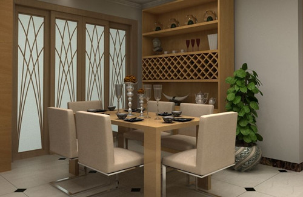
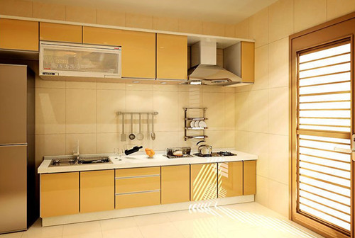
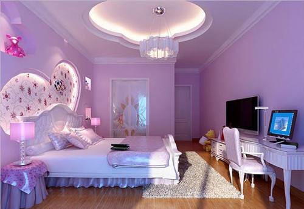
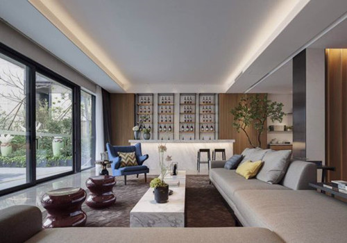
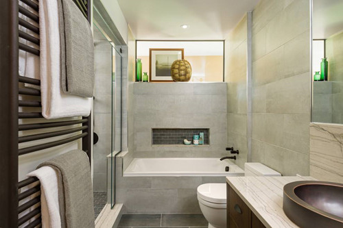

房屋装修风水 - 这样装修房子才会更旺
众所周知，居室风水对于我们日常生活还是具有一定影响的。虽然风水知识不一定说完全可信，但也有一些风水知识是有依据的，所以我们还是得注意。那么，关于房屋装修风水你有了解过吗?下面我们就来一探究竟吧!
房屋装修风水 — 餐厅
厨房与餐厅的布置要简单及洁净，千万不能杂乱或摆设太多装饰品。并且餐厅不宜设在厨房之中，因为厨房中的油烟及热气较潮湿，人坐在其中无法愉快用餐。此外，厨房地面也要平坦且忌比宅内房间更高。并且餐桌不可正对大门，若真的无法避免，可利用屏风挡件。同时餐厅自身方向最好设在南方，如此一来，在充足的日照之下，家道将会日渐兴旺，若餐厅内设置了冰箱，则方位以北为最佳，不可向南。
房屋装修风水 — 厨房
如果您的套宅门向北，而炉灶方向南，那么你就已经犯了背宅反向的忌讳了，这样是不利家运的。厨房中的炉灶不可与水太接近，炉灶和洗碗盆之间也要留一块缓冲地带，并且不要在炉灶上面晾衣服。此外，厨房至少要有一面对着空旷处(如阳台、天井、后院等)，切忌封闭，或在屋子中央。同时厨房切不可设在两个卧室之间，犯此忌，就会对居住两边卧室中的人不利。另外业主们也要记得不要在厨房安放洗衣机。因为古人认为厨房是灶君之所在，十分神圣，在其间洗涤不洁的衣物，会影响运气。
房屋装修风水 — 卧室
其实家装风水还应注意卧室装修风水。比如卧房不能无采光功能，并且最好有对外窗户。同时卧房形状应方正，斜边或多角形并不恰当，因为这样会造成视觉及精神上的压迫，并且身体也会经常患病不适。同时卧房的形状太过奇怪，福气不宜聚纳，会破坏命理学上的布局，所以我们不要把卧房当仓库。此外，房门不可正对卫生间，因为卫生间的机能是负责排泄清洁沐浴，会聚集秽气和湿气。同时卧房也不可正对厨房，卧房不可对大门，如对着大门，可以屏风隔开，或悬挂门帘来转运。
房屋装修风水 — 客厅
客厅宜设在房屋中央的位置，并且客厅沙发套数不可重复，最忌一套半，或是一方一圆两组沙发的并用。客厅中的鱼缸、盆景有“接气”的功能，所以可以使室内更富生机，而鱼种则以色彩缤纷的单数为好。此外，入门处不宜看到房间门和后门，否则便有“前面进、后门出，无 法聚财”之患，同时走道也应避免直向或横向的贯通全室。
房屋装修风水 — 卫生间
卫生间浴室重在来水和去水，水气甚重，倘若开在西南或东北两个气当旺的方位，会有“土克水”的毛病发生，因此不吉利，尤其是家人健康会受损。并且卫生间不宜开在南方。因为卫生间被认为是较为不洁及隐私的地方，所以不宜太瞩目。
